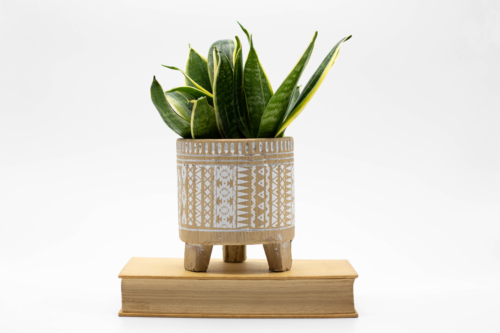
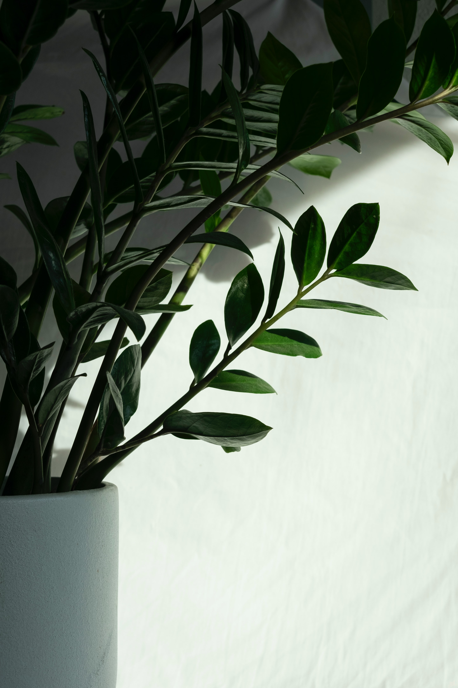
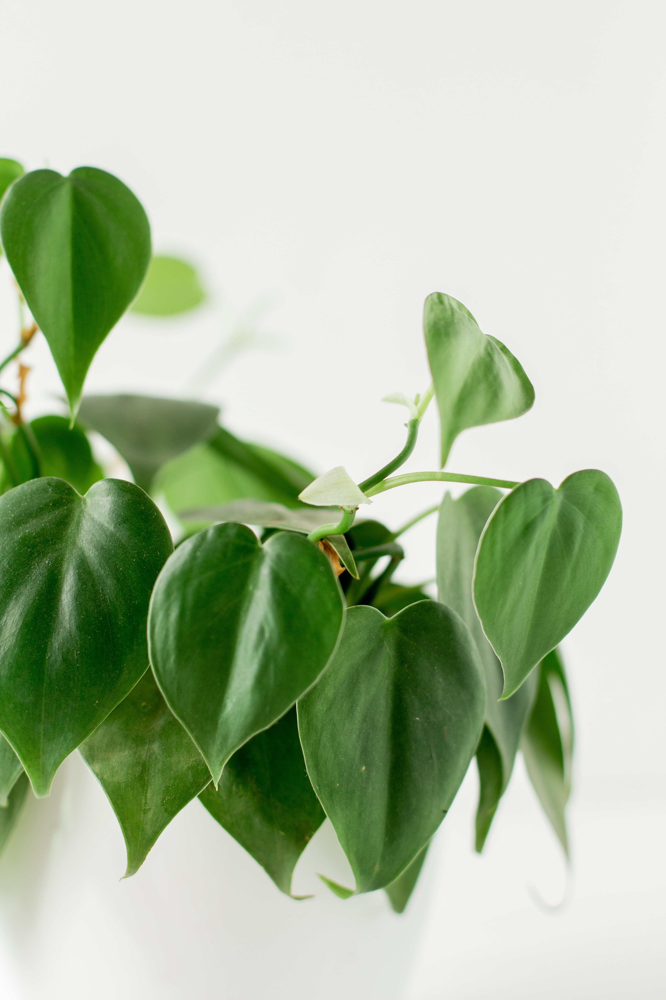
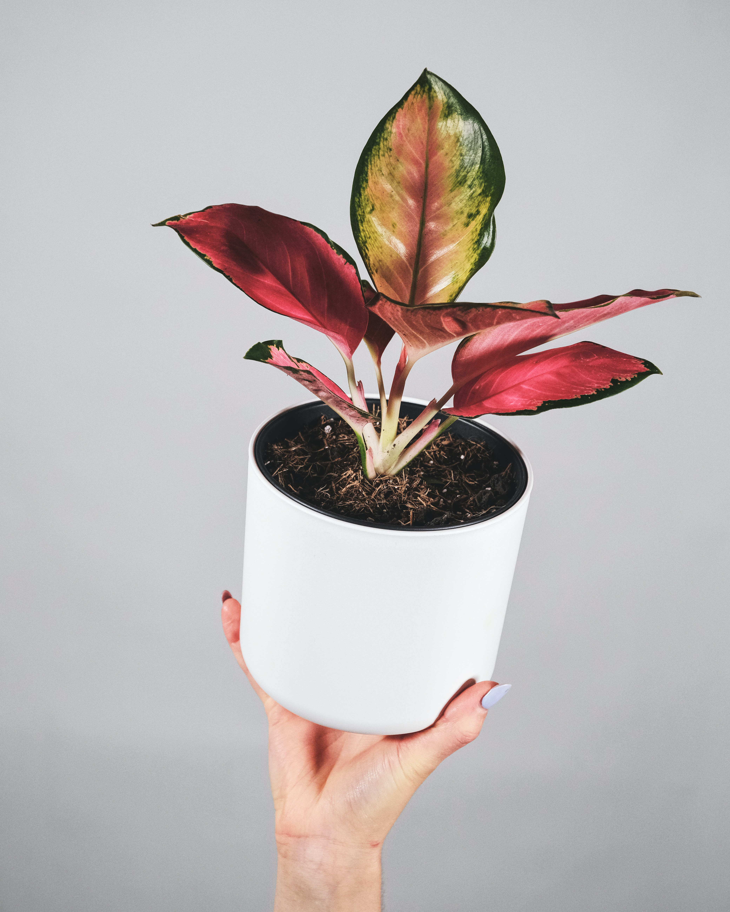

We’ve put together a list of the easiest to care for houseplants out there that anyone can grow.
We’ve put together a list of the easiest to care for houseplants out there that anyone can grow. Maybe you had an indoor plant once and it very quickly turned into a wilting, yellowing embarrassment. Or, maybe you’ve never owned an indoor plant because you aren’t sure if you can keep it alive. Don’t get discouraged! Success with houseplants starts with finding the right plant for you. Maybe you just need an indoor plant that won’t mind if you forget to water it once in a while. Or a houseplant that will survive a week alone when you’re out of town for your friend’s wedding. Check out these 9 easy houseplants that are hard to kill and you’ll see that there’s an indoor plant out there for everyone—whether you have a green thumb or not.
Monstera

Adaptable to almost all light conditions, and somewhat drought tolerant, the Monstera is a low maintenance, stunning tropical plant. Look out for: Crispy leaves mean the plant is getting sunburned or it’s not getting enough water, yellow leaves mean too much water. But don’t worry, Monsteras are incredibly forgiving and bounce back quickly!
Sansevieria
This hardy plant will do just fine in any type of light from low light areas to bright, full sun. Sansevieria don’t need a lot of water, are not sensitive to temperature changes, and don’t require any additional care. They ar also highly-sought after for their air-purifying properties. Look out for: Yellow, drooping leaves and funny smell, which could indicate overwatering.
ZZ plant
Virtually indestructible, the ZZ Plant will do best if you basically ignore it. It thrives in areas where many plants don’t, making it one of the best office plants or bathroom plants. The ZZ Plant requires very little water and prefers to be kept on the dry side. Look out for: Yellow leaves mean the plant is getting too much water.
Philodendron Heartleaf
This adaptable plant thrives in indirect light and actually suffers if exposed to bright sunlight. It likes to be consistently watered, but is very forgiving if you forget to water it once in a while. Look out for: Yellowing leaves indicate overwatering.
Aglaonemas
This lush plant thrives in nearly every light condition except direct sun—this makes it a perfect hallway or bathroom plant to help liven up your home! It does like to be kept moist, so consistent watering is important. Look out for: Tips of the leaves turning brown could be caused by the salts in your tap water.